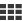
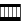

Resultater i Europeana
Europeana deler søkeresultater i fire hovedkategorier: tekst, bilder, video og lyd.
Typene av poster som inngår i hver del er:
- Tekster
 : bøker, brev, arkiverrte dokumenter, avhandlinger, dikt, avisartikler, faksimiler, manuskripter og noter.
: bøker, brev, arkiverrte dokumenter, avhandlinger, dikt, avisartikler, faksimiler, manuskripter og noter.
- Bilder
 : malerier, tegninger, grafikk, foto, bilder av museers gjenstander, kart, grafisk design, planer og musikalsk notasjon
: malerier, tegninger, grafikk, foto, bilder av museers gjenstander, kart, grafisk design, planer og musikalsk notasjon
- Video
 : filmer, nyhetssendinger og TV-programmer.
: filmer, nyhetssendinger og TV-programmer.
- Lyd
 : musikk og tale fra sylindre, lydbånd, plater og radiosendinger
: musikk og tale fra sylindre, lydbånd, plater og radiosendinger
Resultatene kan vises som et rutenett , på tidslinjen  eller på et kart  . Du kan også sortere søkeresultater etter medietype, språk, dato, land, leverandør eller rettigheter, ved hjelp av menyen på venstre side av resultatene.
. Du kan også sortere søkeresultater etter medietype, språk, dato, land, leverandør eller rettigheter, ved hjelp av menyen på venstre side av resultatene.
Ytterligere detaljer til et objekt kan bli funnet ved å klikke på elementet i resultatlisten. For å se elementet i sin fulle tilgjengelige form (dvs. du ønsker å lese boken, se bildet i full størrelse eller se en video), klikk på linken under 'Vis element' som du finner under miniatyrbildet. Denne koblingen tar deg til nettsiden til den organisasjonen som har tilbudt objektet til Europeana.
Enkeltelementer
Etter å ha utført søket, klikk på elementet du vil vise. Dette vil ta deg til den siden hvor du så kan finne mer informasjon om dette elementet.
- Rettigheter og lisensinformasjon
Nedenfor elementets miniatyrbilde, kan du finne rettigheter og lisensinformasjon for det aktuelle elementet.
Merk: kun om lag 3 millioner Europeana elementer har i dag klare rettighets- deklareringer. Dette tallet er forventet å vokse etter hvert som vi fortsetter å forbedre vår metadata-kvalitet og -standarder.
- Relatert innhold
Nederst på siden som viser objektet, nedenfor 'Utforsk videre!',du kan se lignende innhold til elementet du ser på. Opp til 10 lignende elementer vises i en bildekarusell.
- Oversett elementets detaljer
Hvis du vil oversette elementets detaljer til ditt språk, klikk 'Oversett detaljer' øverst til høyre. Det vises et vindu der du først velger en tjeneste for oversettelse og deretter språket du vil ha detaljene oversatt til. Tjenestene skal identifisere den opprinnelige språk automatisk slik at du ikke trenger å spesifisere det.
- Søk i eksterne tjenester
Mange verdier (f.eks, skaper, dato, type) i elementets metadata - elementets beskrivelse - er klikkbare, og lenker til relaterte søkeresultater. Hvis verdien er etterfulgt av en liten trekant, betyr dette at du også kan søke denne verdien eksternt. Når du klikker på trekanten, vises et vindu hvor du velger den eksterne tjenesten du vil bruke, f.eks Wikipedia, IMDB, Google. Dette vil ta deg til søkeresultatene generert av denne tjenesten.
- Lenke til nye søkeresultater på Europeana
Lenker i elementets metadata - elementets beskrivelse - som ikke er fulgt av en trekant, tar deg til søkeresultatene på Europeana for disse spesielle verdiene. Dette er en rask måte å finne innhold av bestemte skapere, et bestemt fag eller fra et bestemt museum, arkiv eller bibliotek.
- Vis elementet på tilbyderens nettsted
Du kan også se elementet i sin fulle tilgjengelige form (dvs. du ønsker å lese boken, se bildet i full størrelse eller se en video) ved å klikke på linken under 'Vis element', som du finner under miniatyrbildet. Denne koblingen tar deg til nettsiden til den organisasjonen som har tilbudt objektet til Europeana. Du kan også se elementet i sin fulle tilgjengelige form ved å klikke på elementets miniatyrbilde.
I de tilfeller hvor tilbyderen har levert et stort bilde, kan du også klikke på forstørrelsesglasset  unnder thumbnail bildet for å se objektet is sin mest komplette form sammen med rettighetsinformasjon og funksjoner for deling og embedding av objektet.
unnder thumbnail bildet for å se objektet is sin mest komplette form sammen med rettighetsinformasjon og funksjoner for deling og embedding av objektet.
Andre funksjoner
- Dele: kan du dele din favorittelement via e-post, på Facebook, Twitter eller Google + ved å klikke på en av sosiale medieikonene som er plassert øverst til høyre. Du kan se flere alternativer ved å klikke på pluss-ikonet.
- Legg inn: plassert øverst til høyre, vil denne funksjonen hjelpe deg å generere HTML-kildekoden for å legge elementet på nettstedet ditt eller bloggen din.
- Sitér på Wikipedia: plassert på høyre side, under Legg inn handling, vil denne funksjonen hjelpe deg å lenke til Europeanaelementer og sitere dem i Wikipedia-artikler. Klikk Sitér på Wikipedia å generere en kode formatert for direkte inkludering i Wikipedias artikkelredigerings modus.
- Logg inn | Registrer: ligger igjen øverst til høyre, denne funksjonen vil ta deg til My Europeana - din personlige plass på Europeana.